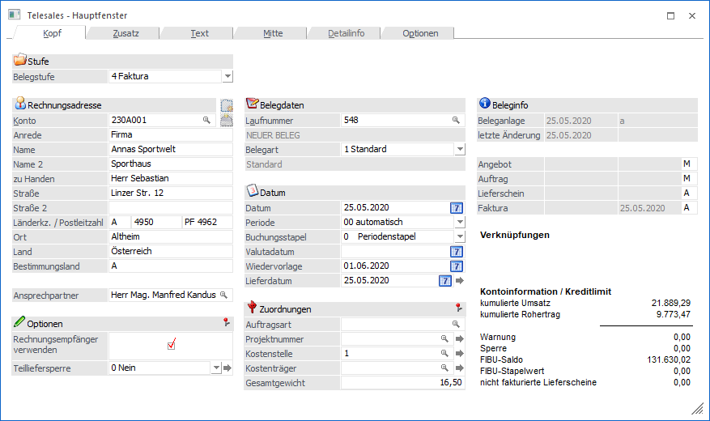
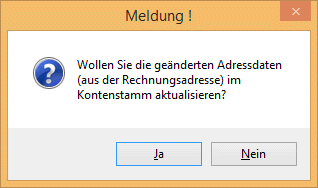

Telesales dient zur Erfassung von Bestellungen bzw. von Lieferungen am Telefon. Der wesentliche Unterschied zur "normalen" Belegerfassung besteht darin, dass für eine erfasste Artikelzeile die Lagerstände sofort verändert werden. Dadurch ist es nicht möglich, einen Artikel 2-mal zu verkaufen bzw. hat man immer eine genaue Kontrolle über den aktuellen Lagerstand.

Wenn die Checkbox in den Applikationsparametern unter Fakt/Belege aktiviert ist, kann man zuerst auswählen, ob man einen Lieferschein oder eine Faktura eingibt.
Dann wird die Kundennummer und die Laufnummer eingegeben. Sollte Ihnen nur die Kundennummer, nicht aber die Laufnummer bekannt sein, können Sie manuell direkt in das Laufnummernfeld wechseln und dort nach dem zur Laufnummer passenden Personenkonto suchen.
Durch Drücken der Lupe im Laufnummernfeld oder Anwählen der F9-Taste erhalten Sie eine Liste mit allen gespeicherten Belegen des bereits eingegebenen Personenkontos oder aller Konten. Diese Liste enthält die aktiven Belege des Kunden/Lieferanten (noch nicht gedruckt, erst in einem Belegkreis bearbeitet, etc.).
Wenn Sie die Checkbox "Alle Belege anzeigen" aktivieren, werden alle, auch die gelöschten und gedruckten, Belege gelistet.
Die gelisteten Belege werden durch einen 4stelligen Informationscode gekennzeichnet. Die 4 Stellen beziehen sich auf die 4 Belegstufen, Angebot, Auftrag, Lieferschein, Faktura.
Folgende Informationscodes geben Auskunft über die Bearbeitungsvorgangsweise:
ü * -> Beleg wurde gedruckt
ü D -> Beleg hat Druckfreigabe = er wurde manuell bearbeitet und alles bereits gerechnet, d.h. der Beleg kann in derselben Belegstufe nicht mehr verändert werden. Beim nächsten Stapeldruck wird er automatisch zum Druck freigegeben.
ü M -> Beleg muss manuell für den Druck freigegeben werden
ü A -> Beleg wird automatisch in den Stapeldruck übernommen, wenn die Vorstufe bearbeitet (= gedruckt) wurde.
ü L -> Beleg ist gelöscht.
ü S -> Sammelfaktura oder Sammellieferschein
ü B -> Ausgangsbeleg für Autobelegerstellung (nur bei Einsatz von PLUS AUTOBELEG)
ü N -> Belegstufe wurde nicht bearbeitet.
Beispiel
Beleg AB-1335 N*MA
Der Beleg 1335 wurde in der Belegstufe Angebot nicht bearbeitet (N). Der Auftrag wurde gedruckt (*)*. Die Belegstufe Lieferschein muss manuell bearbeitet werden (M). Sobald der Lieferschein gedruckt wurde, wird die Faktura in den Stapeldruck übernommen (A).
Ablauf Belegerfassung
Ø Kunden/Lieferantennummer
Geben Sie die Kunden-/Lieferantennummer ein oder suchen Sie mit dem Matchcode F9 oder Doppelklick. Wird ein Personenkonto angesprochen, welches inaktiv gesetzt ist, wird vom Programm eine Meldung ausgegeben.
Ø  Adressdaten aktualisieren
Adressdaten aktualisieren
Durch Drücken dieses Buttons (und entsprechender Bestätigung der "Sicherheitsabfrage") können die Adressdaten des angegebenen Personenkontos in den Personenkontenstamm übergeben werden.

Bei der Übergabe an den Stammdatensatz werden folgende Werte aktualisiert:
ü Anrede
ü zu Handen
ü Straße
ü Straße 2
ü Landeskennzeichen
ü PLZ
ü PLZ2
ü Ort
ü Land
Damit der Button "Adressdaten aktualisieren" zur Verfügung steht, muss dieser in der Fakt-Parametern aktiviert werden.
Laufkunden
Laufkunden sind Einmalkunden, für die trotzdem eine Rechnung ausgestellt werden soll. Damit Laufkunden verwaltet werden können, muss im Personenkontenstamm ein Konto mit der Option "div. Personenkonto" angelegt werden.
Wird dieses Konto aufgerufen, wechselt das Programm gleich in das Adressfeld, in dem die Adresse erfasst werden kann. Die Adresse wird nicht in den Personenkontenstamm zurückgeschrieben, sondern in die Tabelle, in der der restliche Beleg auch gespeichert wird. Dadurch ist es möglich, ein Konto für viele Laufkunden zu verwenden.
Ø Bestimmungsland
In diesem Feld muss das Länderkennzeichen für das Versandland (Einkauf) bzw. Bestimmungsland (Verkauf) welches für die Intrastatmeldung ausschlaggebend ist hinterlegt werden.
Dieses Feld wird im Verkauf mit dem Länderkennzeichen der Lieferadresse und im Einkauf mit dem Länderkennzeichen der Rechnungsadresse automatisch vorbelegt; kann jedoch manuell editiert werden.
In der Intrastatmeldung wird nur mehr der Wert dieses Feldes geprüft, d.h. es werden nur jene Belege angezeigt, bei denen in diesem Feld ein "EU-Staat" eingetragen ist.
Bei Änderung des Länderkennzeichen bzw. der Adresse im Belegerfassen, beim Kopieren eines Beleges auf ein anderes Konto bzw. beim Aktualisieren der Adressdaten in der Belegumstellung wird dieses Feld bei Verkaufsbelegen mit dem Länderkennzeichen der Lieferadresse und bei Einkaufsbelegen mit dem Länderkennzeichen der Rechnungsadresse belegt.
Beim Upsize auf die Version 8.5 Build 1205 wird dieses Feld mit dem Länderkennzeichen der Lieferadresse vorbelegt.
Ø Rechnungsempfänger verwenden
Die Fakturenadresse (die beim Kundenkonto hinterlegt ist) wird in die Lieferadresse kopiert. Das bedeutet, wenn bei einem Kunden ein Rechnungsempfänger hinterlegt ist, wird der Kunde in die Lieferadresse und der Rechnungsempfänger in die Fakturenadresse kopiert.
Ø Teilliefersperre
Ob Teillieferungen bei einem Kunden erlaubt sind oder nicht, kann primär im Kundenstamm selbst hinterlegt werden (siehe dazu Personenkonto - FAKT im WinLine Allgemein Handbuch). Diese Vorbelegung kann über die Belegart nochmals übersteuert werden (Nähere Informationen entnehmen Sie bitte dem WinLine FAKT1 - Handbuch Kapitel Belegartenstamm). Sollte diese Vorbelegung auf einzelne Belege NICHT zutreffen, kann dieses Flag auch noch direkt im Belegkopf übersteuert werden.
Wenn im Beleg eine Teilliefersperre auf Belegebene vorhanden ist, werden alle im Beleg vorhandenen Zeilen aus der Liefertabelle gelöscht, sobald eine Zeile dieses Beleges nicht geliefert werden kann.
Wenn im Beleg eine Teilliefersperre auf Zeilenebene vorhanden ist, werden die im Beleg vorhandenen Zeilen aus der Liefertabelle gelöscht, die nicht geliefert werden können.
Ø Laufnummer
Die Laufnummer ist belegübergreifend und gilt für alle Belegstufen. Die Funktion der Laufnummer ist das schnelle Übergeben eines Beleges von Stufe zu Stufe.
Wird ein Beleg in die Stufe Faktura abgerufen, dann wird die Laufnummer freigegeben und kann wiederverwendet werden. Der Beleg kann dann unter der Fakturennummer bearbeitet - z.B. storniert - werden.
Die Laufnummer ist max. 7stellig und alphanumerisch. Die erste Zahl muss numerisch sein. Eine Ausnahme bildet das Angebot mit der Laufnummer PREISE und MENGEN (ist zurzeit noch nicht unterstützt). Angebote mit dieser Laufnummer erfüllen Spezialfunktionen zur Ermittlung von kundenindividuellen Preisen bzw. Verpackungsverwaltung.
Solange die Laufnummer nicht bestätigt wurde, kann kein anderes Eingabefeld bearbeitet werden.
Ø Belegart
Die Standard Belegart des Kunden/Lieferanten wird vorgeschlagen. Mit dem Matchcode kann nach alternativen Belegarten gesucht werden.
Ø Datum
Das Tagesdatum wird vorgeschlagen und kann geändert werden, mit +/- ist ein schnelles Ändern des Datums möglich.
Ø Periode
An dieser Stelle kann die Periode des Belegs, unabhängig vom Rechnungsdatum, definiert werden (nur bei Belegstufe "4 - Faktura" möglich).
Ø Buchungsstapel
Bei der Belegstufe "4 - Faktura" / "8 - L.Faktura" werden alle vorhandenen Stapel in einer Combobox angezeigt, die als FAKT-Stapel definiert sind. Über den "Periodenstapel" werden die Fakturen in den jeweiligen Buchungsübernahme-Stapel -1 bis -12 übergeben. Abweichende FAKT-Stapel stehen zur Auswahl zur Verfügung, wenn die Option "Abweichende Faktstapel verwenden" im FAKT-Parameter aktiviert ist und FAKT-Stapel im Programm "Buchungen speichern" angelegt wurden.
Voreingestellt ist der Buchungsstapel, der in der Belegart hinterlegt ist.
Ø Valutadatum
Wenn hier ein abweichendes Datum zum Rechnungsdatum eingegeben wird, wird dieses Datum als OP-Datum und für die Berechnung des Mahndatums verwendet.
Ø Wiedervorlage
Hier kann ein Wiedervorlagedatum eingegeben werden. Wurde im Programm WinLine START im Menüpunkt Optionen/FAKT-Parameter im Feld "Spanne für Wiedervorlage" ein Wert (z.B. 7 Tage) eingegeben, wird das Wiedervorlagedatum automatisch vorbesetzt. Dabei wird das Bearbeitungsdatum plus den Wiedervorlagetagen gerechnet. Dieses Datum dient in weiterer Folge für die Wiedervorlage. Siehe auch Kapitel Angebotswiedervorlage.
Ø Lieferdatum
Das hier eingegebene Lieferdatum gilt als Standardwert für alle Belegzeilen. Sollte das Lieferdatum für einzelne Artikel abweichen, kann das Lieferdatum in der Detailinfo der Artikelzeile übersteuert werden.
Wird ein bereits bearbeiteter und einmal gespeicherter Beleg bearbeitet, kann durch Anklicken des Buttons das in dieses Feld eingegebene Lieferdatum auf alle bestehenden Erfassungszeilen kopiert werden.
Ø Auftragsart
Die Auftragsart kann eingegeben und in der Statistik bzw. der Vertreterabrechnung ausgewertet werden.
Ø Projektnummer
Über die Projektnummer kann eine durchgängige Nummerierung gegeben werden, die
a) automatisch hochgezählt wird
b) unabhängig von der Anfangsbelegstufe ist und
c) über den gesamten Belegfluss erhalten bleibt
Ø Kostenstelle
Geben Sie die Kostenstelle ein, wenn der Beleg in die WinLine KORE übergeben werden soll. Je nach Belegart, kann die Kostenstelle in den Belegzeilen noch verändert werden. Wird ein bereits bearbeiteter und einmal gespeicherter Beleg bearbeitet, kann durch Anklicken des Buttons die in diesem Feld eingegebene Kostenstelle auf alle bestehenden Erfassungszeilen kopiert werden.
Ø Kostenträger
Geben Sie den Kostenträger ein, wenn der Beleg in die WinLine KORE übergeben werden soll. Je nach Belegart kann der Kostenträger in den Belegzeilen noch verändert werden. Wird ein bereits bearbeiteter und einmal gespeicherter Beleg bearbeitet, kann durch Anklicken des Buttons der in dieses Feld eingegebene Kostenträger auf alle bestehenden Erfassungszeilen kopiert werden.
Ø Gesamtgewicht
In diesem Feld kann das Gesamtgewicht des Beleges manuell eingetragen werden. Über eine Belegformel kann dieses Feld (Variable 0/643) ebenfalls befüllt werden.
Allgemeine Informationen
In diesem Feld werden allgemeine Informationen zum Beleg und zum aufgerufenen Kunden/Lieferanten angezeigt. Diese Informationen können frei definiert werden (über rechte Maustaste/Formular bearbeiten).
Ø Beleganlage:
Datum, an dem der Beleg erfasst und Benutzer, von dem der Beleg erfasst wurde
Ø Letze Änderung:
Datum, an dem der Beleg zuletzt geändert und Benutzer, von dem der Beleg zuletzt geändert wurde
Ø kum. Umsatz
Kumulierter Umsatz des aktiven Personenkontos
Ø kum. Rohertrag
Kumulierter Rohertrag des aktiven Personenkontos
Ø Kreditlimit
Hier werden detaillierte Informationen über das Kreditlimit eines Kunden bzw. Lieferanten angezeigt:
ü Warnung
Anzeige der
Warnbetrages. Dieser Betrag kann im Personenkontenstamm im Register FIBU
eingegeben werden.
ü Sperre
Anzeige des
Sperrbetrages. Dieser Betrag kann im Personenkontenstamm im Register FIBU
eingegeben werden.
ü FIBU-Saldo
Hier wird der
aktuelle FIBU-Saldo des Personenkontos angezeigt.
ü Stapelwert
Hier wird die Summe
aller Buchungen für dieses Personenkonto angezeigt, die noch auf einem Stapel
liegen aber noch nicht verbucht wurden.
Durch Anklicken des Vorschau-Buttons kann der Beleg in einer Übersicht angesehen werden.
Durch Anklicken des Statistik-Buttons erhalten Sie eine Übersicht über die Verkaufszahlen der letzten 3 Jahre. Diese Übersicht kann auch in detaillierter Form ausgegeben werden.
Durch Anklicken des Löschen-Buttons wird der Beleg gelöscht bzw. storniert. Nähere Informationen bezügl. des Stornierens eines Beleges entnehmen Sie bitte dem WinLine FAKT2 - Handbuch Kapitel "Beleg stornieren".